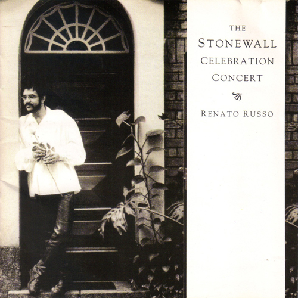
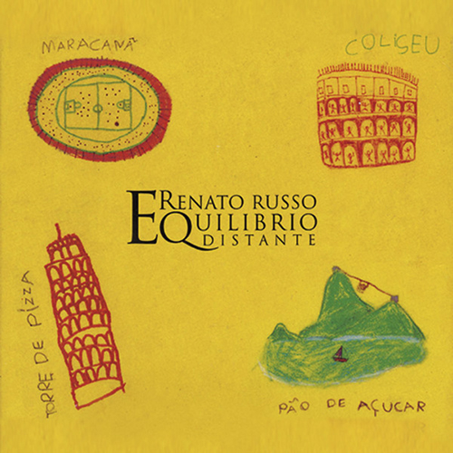
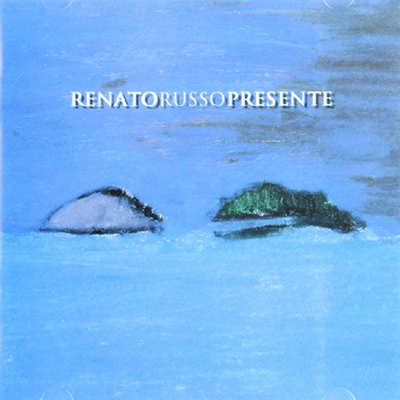
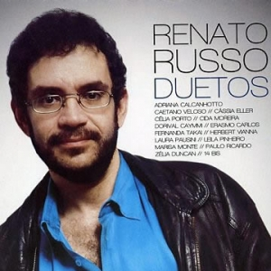

Renato ‘Russo’ Manfredini Júnior (1960 - 1996) was a Brazilian singer and songwriter,
founder and vocalist of the rock band Legião Urbana , one
of the famous Brazilian rock group, with the songs “Será” (1985), “Eduardo e Mônica” (1986),
“Que País é Esse” (1987), “Pais e Filhos” (1989), among others.
Renato Russo was born in Rio de Janeiro, on March 27, 1960. He was son of a public bank employee and lived in New York and Brasília.
Diagnosed with epiphysiolysis, a bone disease, he spent six months in bed, during this time, he dedicated himself to composing lyrics and music.
Between 1978 and 1981 he was English and English literature professor.
Renato, in late 1982, created Legião Urbana, along with Marcelo Bonfá, Eduardo Paraná and Paulo Paulista.
In the same year Eduardo and Paulo left the band and Ico Ouro Preto took over the guitar, being replaced later by Dado Villa-Lobos.
In 1985, with another member, Renato Rocha, the band recorded its first album. The band was very successful, there were seven albums in 11 years of career.
In 1993, he started a solo career and in the following year he releases “The Stonewall Celebration Concert”.
In 1995, releases “Equilíbrio Distante”, interpreting Italian songs. According to Renato, the album was made in honor of his family.
Renato Russo died on October 11, 1996, due to AIDS, a disease that was diagnosed in 1989.
Discography

Stonewall Celebration Concert

Equilibrio Distante

Presente
O Trovador Solitário

Duetos
O Último Solo
You were hoping to fly
But how get to the clouds with the feets on the ground?